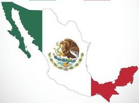

SEPTIEMBRE MES PATRÍO
¡VIVA MEXICO!
¡Vamos a festejar este mes patrío con todo el orgullo Méxicano como debe de ser!.
Aquí podrás ver las fechas importantes del mes de septiembre, sus datos curiosos, sus mitos y sus personajes ilustres.

¡VIVA MEXICO!
¡Vamos a festejar este mes patrío con todo el orgullo Méxicano como debe de ser!.
Aquí podrás ver las fechas importantes del mes de septiembre, sus datos curiosos, sus mitos y sus personajes ilustres.
